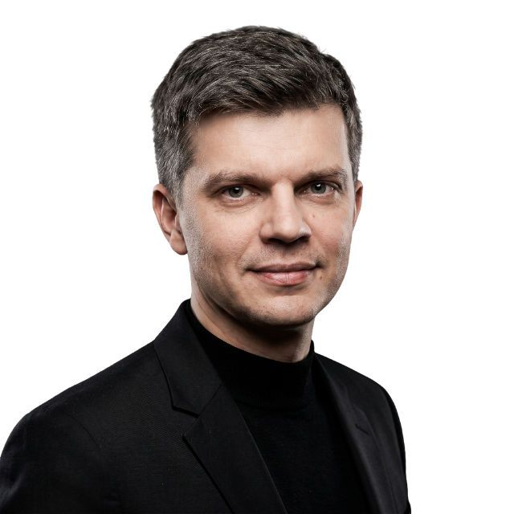

Nobody trusts the black box.

I turn it into the tool commercial teams actually use. First product person at Heineken's Global Analytics & AI Hub, three production decision systems built for a ~€2.9B budget.
It's all probabilities.
Every model, market and building I've worked on gave a range, not an answer.
My job is getting people to act on the range.
Ninety seconds, in person.
What I built at Heineken, what I learned about getting people to trust a model, and what I'm looking for next.
I've been the first person inside something new three times. I was the first hire at a Chinese architecture firm's European office and set it up in Poland from zero. At MAD Architects in Beijing, I was one of two founding members of the parametric design group. And I was the first product person in Heineken's Global Analytics & AI Hub.
Real money, every second.
Heineken's global marketing spend since you opened this page:
€331,000 an hour. €7.9 million a day. €2.9 billion a year.
Every euro gets asked three questions: where, what, when. Three systems, wired to run as one loop, answer them.
FY2024 marketing & selling · 9.8% of €30.0B net revenueFY2024 results ↗Full report (PDF) ↗Three of us against a consultancy's finished product. We won.
Build or buy. Heineken was ready to buy a consultancy's promo-planning product. Three of us got less than half a year to show that building it in-house would work better.
Three questions. One loop.
Three systems, one decision loop
Every euro of Heineken's ~€2.9B marketing budget answers three questions: where to spend (Allocation AI), what to promote (Promo Advisor), when to promote (Smart Flighting). Three systems, wired to run as one loop, not three separate tools.
Buildings that were programs.
Five years in China. I wrote the scripts behind a facade and an opera house interior at MAD, and competition wins at AREP. A decade before "AI agent" was a phrase, I was building evolutionary solvers that bred building geometry from a fitness function.
Most importantly, he has great working habits: extremely well organized in all aspects, always looking into possible ways to improve his own work and his team's.
Tomasz made a great effort to investigate the problem, and through the research process he kept the highest standards and followed very clear logic.